03: Swin Transformer: Hierarchical Vision Transformer using Shifted Windows(Swin Transformer)
1 Swin-Transformer
在阅读Swin Transformer 这篇文章之前，让我们回顾一下 Vision-Transformer 讲的是什么： ViT 在处理图像时，会将整张图像分割成固定大小的patch，并进行global self-attention的计算，从而捕捉图像中的全局信息。 然而， 这种方法存在两个核心的问题：
- 计算复杂度高: ViT的计算复杂度为 \(\mathcal{O}(( \frac{HW}{P^2})^2)\)，其中\(H\)和\(W\)分别是图像的高度和宽度，而\(P\)是patch的大小。对高分辨率图像（High Resolution)（如检测或分割任务）来说，token 数量巨大，计算和显存开销难以承受
- 缺乏局部特征建模: ViT在进行全局自注意力计算时，可能会忽略图像中的局部特征
- 没有金字塔式层级结构: CNN 的层级结构（从低层局部特征到高层语义特征）非常适合处理多尺度目标, ViT 直接用固定大小 patch flatten 成序列，缺乏层次表示，难以适应密集预测任务（如目标检测、语义分割）。
We observe that significant challenges in transferring its high performance in the language domain to the visual domain can be explained by differences between the two modalities. One of these differences involves scale … visual elements can vary substantially in scale … Another difference is the much higher resolution of pixels in images compared to words in passages of text … as the computational complexity of its self-attention is quadratic to image size. Swin Transformer Hierarchical Vision Transformer using Shifted Windows, p.
为了解决这些问题， Swin Transformer (Liu, Lin, et al. 2021) 提出一种新的基于 Vision Transformer的架构它通过引入层次化的特征表示(Hierarchical Architecture) 和 移动窗口机制(Shifted Window MSA, SW-MSA)，来有效地捕捉图像中的局部和全局信息， 并且通过局部窗口(Window-based Multi-head Self Attention, W-MSA) 注意力，来降低训练的时间复杂度。
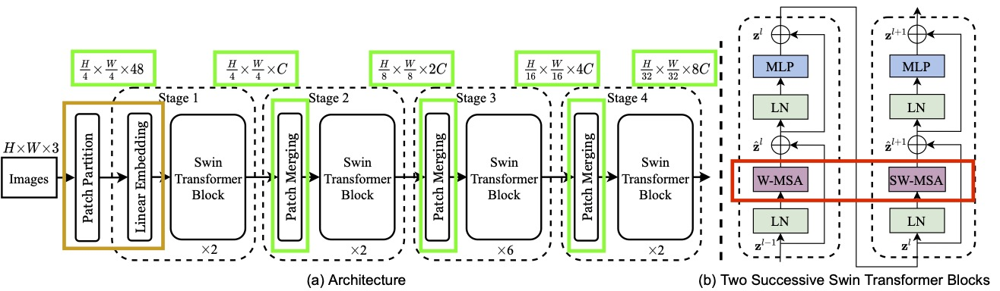
接下来，我们来详细介绍 Swin Transformer 的架构和关键技术。我们首先来看Swin Transformer 的Attention的实现。
1.1 Window Multi-Head-Attention (W-MHA)
W-MHA 的核心思想是：
- 把图像划分成固定大小的窗口（window），比如 7×7 patch 的窗口。
- 在窗口内的 token 之间做局部自注意力，而不是在整张图像的所有 token 之间做全局注意力。
- 每个窗口独立计算 Multi-Head Attention → 降低计算量，并且我们可以并行的计算
这样一来：
- 单个窗口 token 数量固定 = \(M^{2}\)（如 7×7=49）。
- 注意力计算复杂度从 \(\mathcal{O}((hw)^{2}C)\) 降低为 \(\mathcal{O}(M^{2}hwC)\)，其中 \(M \ll \sqrt{ N }\)。
除了降低计算复杂度之外，W-MHA，还有保留CNN 在图像处理中强大的一点是 局部感受野 和 平移不变性。
- W-MHA 通过窗口限制，使得注意力机制也具备类似的局部归纳偏置（inductive bias），适合图像建模。
For efficient modeling, we propose to compute self-attention within local windows. The windows are arranged to evenly partition the image in a non-overlapping manner. Swin Transformer Hierarchical Vision Transformer using Shifted Windows, p.4
1.2 Shifted Window Multi-Head-Attention (SW-MHA)
W-MHA 很好，但是它存在的一个问题就是：
- 窗口之间是相互独立的，缺少跨窗口的信息交流。这会导致，模型只能看见局部，不能获得全局的信息。
The window-based self-attention module lacks connections across windows, which limits its modeling power. To introduce cross-window connections while maintaining the efficient computation of non-overlapping windows, we propose a shifted window partitioning approach which alternates between two partitioning configurations in consecutive Swin Transformer blocks. Swin Transformer Hierarchical Vision Transformer using Shifted Windows, p.4
为了解决这个问题，Swin- Transformer提出来 Shifted Window Mulit-Head-Attention (SW-MHA) 窗口位置相对前一层平移，比如 7×7 窗口 → 平移 3 个 patch。 这样，新的窗口会跨越原来的边界，token 会和相邻窗口的 token 一起计算注意力。 相当于强制跨窗口交互，让信息可以在不同区域之间流动。
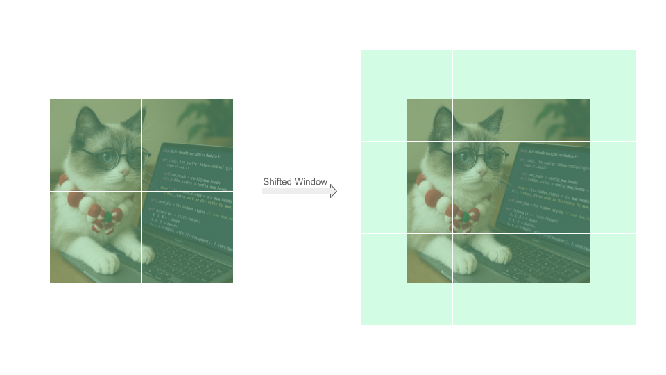 如上如所示，我们将Window通过向左上角移动，通过给图片增加Padding来，但是这种办法显然会增加计算的复杂度。Swin Transformer用了一种很聪明的办法，叫做 Cycling Shift，这种方法就是将将一个张量或图像在某个维度上做 平移，但不是把移出去的部分丢掉，而是 重新从另一边补回来。就像“环形队列”或“钟表走一圈又回到起点”。 如下图所示 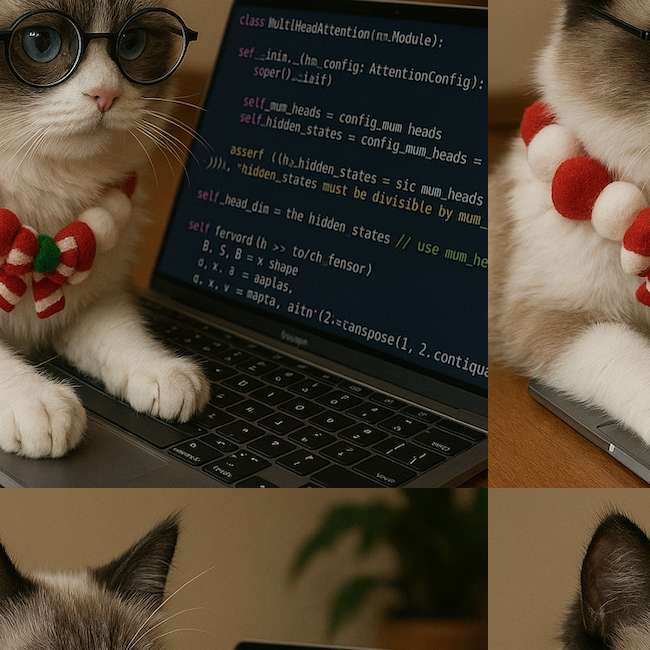
可以看到，通过Cycling Shift，我们得到的每个window的内容，和之前是一样的，但是所需要的Window的数量，小了很多，这也就意味着，所需要的时间复杂度，也小了很多。
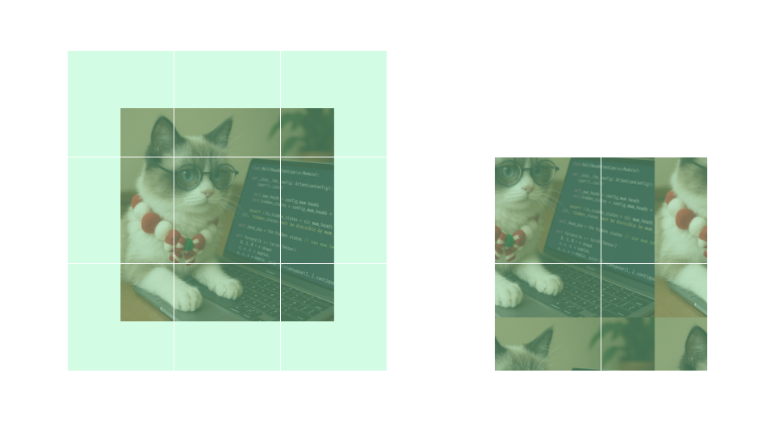
不过Cycling Shift也有一个问题，就是同一个窗口里面，可能有来自不同图片的信息，这些信息在原图片上不是相邻的，自然不应该相互交流信息。我们可以将图片，抽象成下图的形式。组织Attention交流，很自然的一种方法是利用Mask，就像Transformer里的Causal Mask一样。但是，这个Mask长什么样子呢
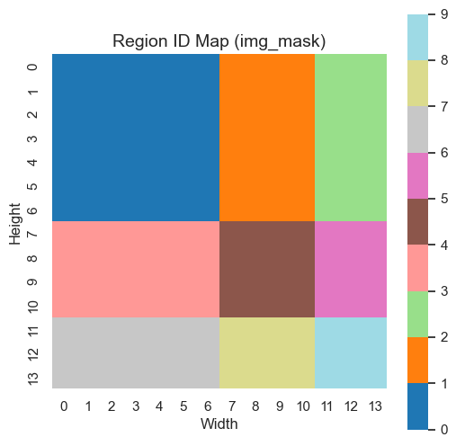
我们可以看一下Mask，如下图所示，有颜色的区域表示Mask == 1， 在此为了更好的
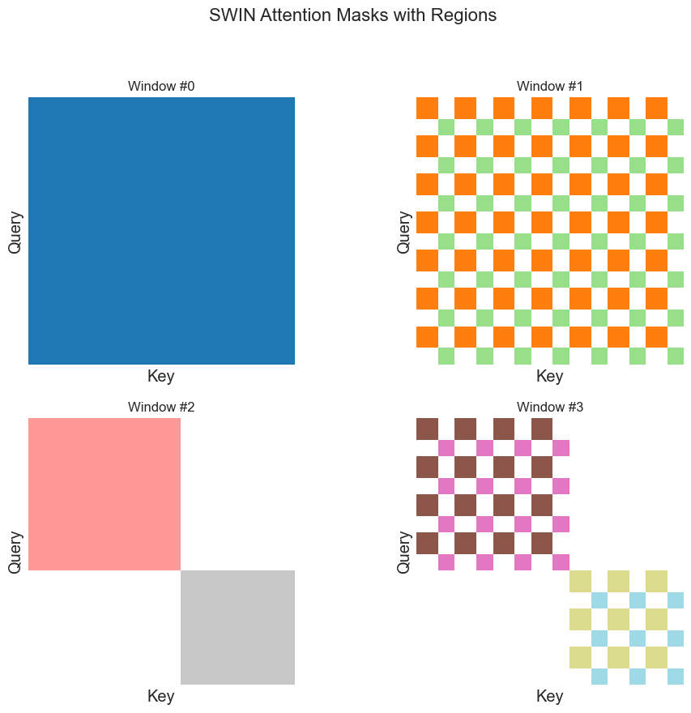
1.3 Consecutive Swin Transformer Block
Swin Transformer is built by replacing the standard multi-head self attention (MSA) module in a Transformer block by a module based on shifted windows (described in Section 3.2), with other layers kept the same. As illustrated in Figure 3(b), a Swin Transformer block consists of a shifted window based MSA module, followed by a 2-layer MLP with GELU nonlinearity in between. A LayerNorm (LN) layer is applied before each MSA module and each MLP, and a residual connection is applied after each module Swin Transformer Hierarchical Vision Transformer using Shifted Windows, p.4
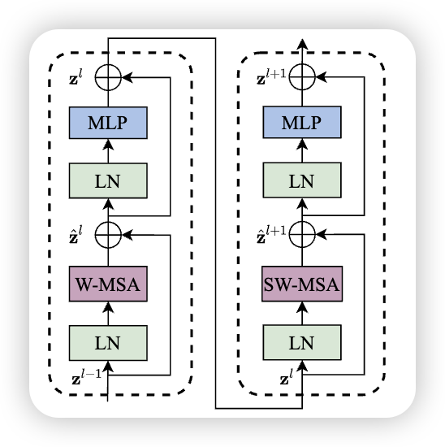
\[ \begin{split} \hat{z}^l &= \text{W-MSA} \left( \text{LN} \left( z^{l-1} \right) \right) + z^{l-1} \\ z^l &= \text{MLP} \left( \text{LN} \left( \hat{z}^l \right) \right) + \hat{z}^l \\ \hat{z}^{l+1} &= \text{SW-MSA} \left( \text{LN} \left( z^l \right) \right) + z^l \\ z^{l+1} &= \text{MLP} \left( \text{LN} \left( \hat{z}^{l+1} \right) \right) + \hat{z}^{l+1} \end{split} \]
将W-MSA 和 SW-MSA叠在一起，就得到了Transformer Block，当然，还有一个MLP，Layer Normalization，在此就不赘述了。
1.4 Patch Merge
讲完了W-MHA，和SW-MHA，我们就理解了Swin- Transformer中最难理解，也是最终的部分，接下来我们看看其他简单的部分。 Patch Merge , 图中绿色的部分，逐步降低 token 数量（降采样），同时增加特征维度的操作。这类似于CNN中的操作，随着层数的增加，分辨率逐步降低、通道数逐步增加，这样既减少了计算量，又能提取层级特征。具体的实现：
- 分组：将相邻的 2×2 patch 合并成一个新的 patch。
- 假设输入特征大小为 (H, W, C)。
- 每 2×2 的 patch → 合并为 1 个新 token。
- 新特征图大小变为 (H/2, W/2, 4C)。
- 线性变换:
- 将合并后的 4C 维特征通过一个 线性层 (Linear Projection)，降到 2C 维。
- 输出维度翻倍（2C），以补偿分辨率减半带来的信息损失。 🔹 为什么提出 Patch Merging
- 分层表示 (Hierarchical Representation) • 模仿 CNN 的金字塔结构，从局部细节逐步聚合到全局语义。 • 有利于下游任务（检测、分割）中不同尺度的目标建模。
- 计算效率 • token 数量逐层减少 → Attention 的复杂度大幅下降。 • 保证模型可扩展到大分辨率图像。
- 语义信息聚合 • 通过合并相邻 patch，模型能把更大感受野的信息整合到新的 token 中。
x = x.view(B, H, W, C)
x0 = x[:, 0::2, 0::2, :] # (B, H/2, W/2, C)
x1 = x[:, 1::2, 0::2, :] # (B, H/2, W/2, C)
x2 = x[:, 0::2, 1::2, :] # (B, H/2, W/2, C)
x3 = x[:, 1::2, 1::2, :] # (B, H/2, W/2, C)
x = torch.cat([x0, x1, x2, x3], -1) # (B, H/2, W/2, 4*C)
x = x.view(B, -1, 4 * C) # (B, H/2*W/2, 4*C)
x = self.reduction(x) # (B, H/2*W/2, 2*C)1.5 Relative Position Encoding
与Transformer 和 Vision-Transformer 中不同的是，Swin Transformer利用的是Relative Position Encoding。
\[ \text{Attention}(Q, K, V) = \text{Softmax}\left( \frac{QK^{T}}{\sqrt{ d }} +B\right) V \]
1. 定义偏置表 (relative_position_bias_table)
• 大小是 (2*Wh-1) * (2*Ww-1, num_heads)
• 意味着窗口内的任意两个 token 的相对位置 (dx, dy)，都有一个可学习的偏置值（每个 head 一份）。
• 例如窗口是 7×7 → 相对位置范围是 [-6,6]，所以表大小是 13×13=169，每个位置存一组偏置
2. 计算相对位置索引 (relative_position_index)
• 首先生成窗口内每个 token 的坐标。
• 然后做差，得到任意两个 token 的相对坐标 (dx, dy)。
• 再映射成表的索引（通过移位和哈希成一个整数 index）。
• 结果是一个 (Wh*Ww, Wh*Ww) 的矩阵，每个元素存两个 token 之间在 bias 表里的索引。
• 在图像里，相对位置比绝对位置更重要：
• 比如一个像素的左邻和右邻很相似，无论这个像素在图像的哪个地方。\[ \begin{tabular} \Xhline{1.0pt} & \multicolumn{2}{c|}{ImageNet} & \multicolumn{2}{c|}{COCO} & \multicolumn{1}{c}{ADE20k} \\ & top-1 & top-5 & AP$^\text{box}$ & AP$^\text{mask}$ & mIoU \\ \hline no pos. & 80.1 & 94.9 & 49.2 & 42.6 & 43.8 \\ abs. pos. & 80.5 & 95.2 & 49.0 & 42.4 & 43.2 \\ abs.+rel. pos. & 81.3 & 95.6 & 50.2 & 43.4 & 44.0\\ rel. pos. w/o app. & 79.3 & 94.7 & 48.2 & 41.9 & 44.1 \\ rel. pos. & \textbf{81.3} & \textbf{95.6} & \textbf{50.5} & \textbf{43.7} & \textbf{46.1} \\ \Xhline{1.0pt} \end{tabular} \]
1.5.1 Fine-Tuning in different image size
和 Vision-Transformer 一样，当输入的图片和训练时不一样，我们可以通过 bi-cubic interpolation 来增大Relative Position
The learnt relative position bias in pre-training can be also used to initialize a model for fine-tuning with a different window size through bi-cubic interpolation Swin Transformer Hierarchical Vision Transformer using Shifted Windows, p.5
\[ \begin{table} \centering \small \addtolength{\tabcolsep}{-4.0pt} \begin{tabular} \Xhline{1.0pt} \multirow{2}{*}{method} & \multicolumn{4}{c|}{MSA in a stage (ms)} & \multicolumn{3}{c}{Arch. (FPS)} \\ & S1 & S2 & S3 & S4 & T & S & B \\ \hline sliding window (naive) & 122.5 & 38.3 & 12.1 & 7.6 & 183 & 109 & 77 \\ sliding window (kernel) & 7.6 & 4.7 & 2.7 & 1.8 & 488 & 283 & 187 \\ \hline Performer~\cite{choromanski2020performer} & 4.8 & 2.8 & 1.8 & 1.5 & 638 & 370 & 241 \\ \hline window (w/o shifting) & 2.8 & 1.7 & 1.2 & 0.9 & 770 & 444 & 280 \\ \hline shifted window (padding) & 3.3 & 2.3 & 1.9 & 2.2 & 670 & 371 & 236 \\ shifted window (cyclic) & 3.0 & 1.9 & 1.3 & 1.0 & 755 & 437 & 278 \\ \Xhline{1.0pt} \end{tabular} \caption{Real speed of different self-attention computation methods and implementations on a V100 GPU. } \label{tab:ablation-selfatt-efficient} \normalsize \end{table} \]
1.6 Others
除了以上几个，Swin Transformer 中还有其他Component，比如 ：
- Patch Embedding
- Linear Projection
- FeedForward
- Layer Normalization 在此，就不赘述了，有需要的同学，请参考前一篇 Vision-Transformer， 或者 Transformer
1.7 Downstream Tasks
当一场图片传入Swin Transformer， 它可以提取出图片的特征。 \[ \mathrm{z} = f_{\theta}(\mathrm{x}), \quad \text{where}\ \mathrm{x} \in \mathbb{R}^{3\times H \times W}, \mathrm{z} \in \mathbb{R}^{H'W' \times C} \]
一张图片转化成了 \(H'W'\) 个特征，每个特征的大小为 $C。
Swin Transformer 可以有当作基本的backbone，在此基础上，我们可以对下游进行不同的任务，比如：
- Image Classification
- Object Detection
- Semantic segmentation
接下来，我们将如何用Swin Transformer在不同的任务中

1.7.1 Image Classification
对于 \(\mathrm{z}\) 的 hidden states，我们可以进行一个Average Pooling，对于每一个特征求均值，然后再将这个传入一个分类头，就可以得到我们Classification了。与 Vision-Transformer 不同的是，Swin Transformer 没有 [CLS] token 来当收集全部的信息。
1.8 Object Detection & Semantic segmentation
Backbone (Swin Transformer)：
- Stage 1: [N, C1, H/4, W/4]
- Stage 2: [N, C2, H/8, W/8]
- Stage 3: [N, C3, H/16, W/16]
- Stage 4: [N, C4, H/32, W/32]
可以得到 FPN(Lin et al. 2017) to create a pyramid of feature maps suitable for detection.
有了这些FPN 之后，我们可以结合不同的算法，来进行不同的任务，比如
例子 1：目标检测 (Object Detection)
以 Swin Transformer + Faster R-CNN (Ren et al. 2016) 为例： 1. 输入图像：一张 800×1333 的 COCO 数据集图片。
3. FPN (特征金字塔网络)：将多尺度特征融合，形成统一的金字塔特征。
4. RPN (Region Proposal Network)：在特征图上生成候选区域。
5. RoI Head：对候选区域进行分类 (车、人、狗…) 和边框回归。
6. 输出：预测结果，例如：
• “一辆车” → 边框 (x1,y1,x2,y2) + 类别 “car”
• “一个人” → 边框 + 类别 “person”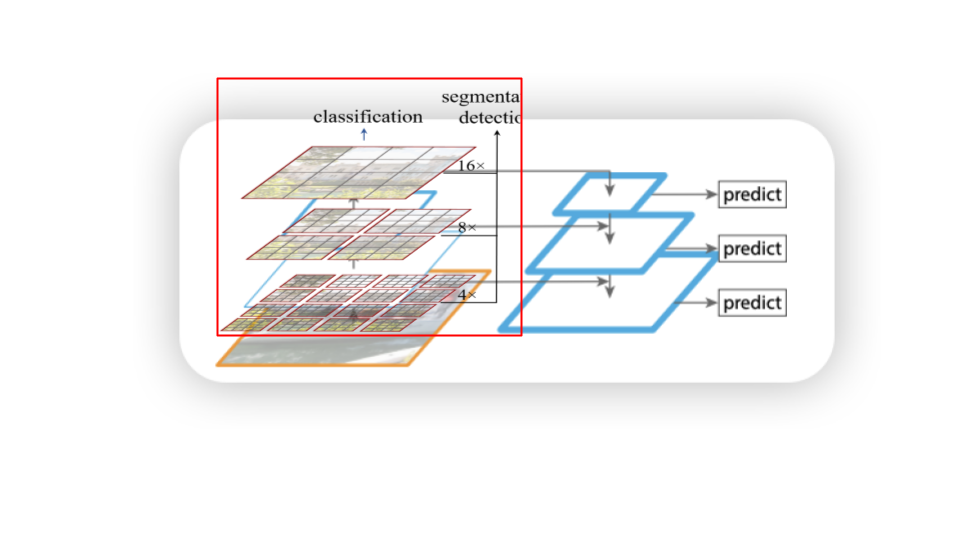 👉 在 COCO 数据集上，Swin-T + Faster R-CNN比 ResNet-50 + Faster R-CNN 的 mAP 提高约 5~6 个点。
语义分割 (Semantic Segmentation) 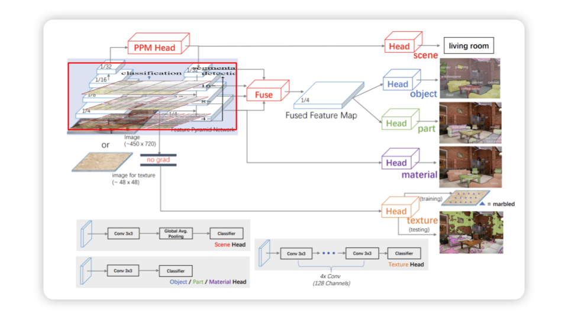 以 Swin Transformer + UPerNet(Xiao et al. 2018)为例： 1. 输入图像：一张 512×512 的 ADE20K 数据集图片。 2. Backbone (Swin Transformer)：同样输出 1/4, 1/8, 1/16, 1/32 四个尺度特征。 3. FPN/UPerNet Head： • 将多层特征融合，对应不同语义层级。 • 利用融合后的特征生成像素级预测。 4. 预测图 (segmentation map)：大小 512×512，每个像素属于一个类别。 • [0,0] 像素 → “sky” • [100,150] 像素 → “building” • [200,300] 像素 → “road” 5. 输出：完整的语义分割图，每个像素都有类别标签。
👉 在 ADE20K 上，Swin-L + UPerNet 的 mIoU 达到 53.5+，比传统 CNN backbone 提升显著。 具体的实现细节，等到以后我们阅读到关于Segmentation的内容在，再来实现
1.9 Training Details
We employ an AdamW optimizer for 300 epochs using a cosine decay learning rate scheduler and 20 epochs of linear warm-up. A batch size of 1024, an initial learning rate of 0.001, and a weight decay of 0.05 are used. We include most of the augmentation and regularization strategies of in training, except for repeated augmentation and EMA, which do not enhance performance. Swin Transformer Hierarchical Vision Transformer using Shifted Windows, p.5
1.9.1 DropPath
论文中还用到了 DropPath 来当作一种 Regularization。 DropPath 也称之为 Stochastic Depth (Huang et al. 2016) , 它是一种应用在Residual Network， 在训练过程中，随机丢弃整个 残差分支 (residual branch) 或 整个路径 (path)。减少过拟合，同时让模型学会依赖不同深度的路径，提升训练稳定性。 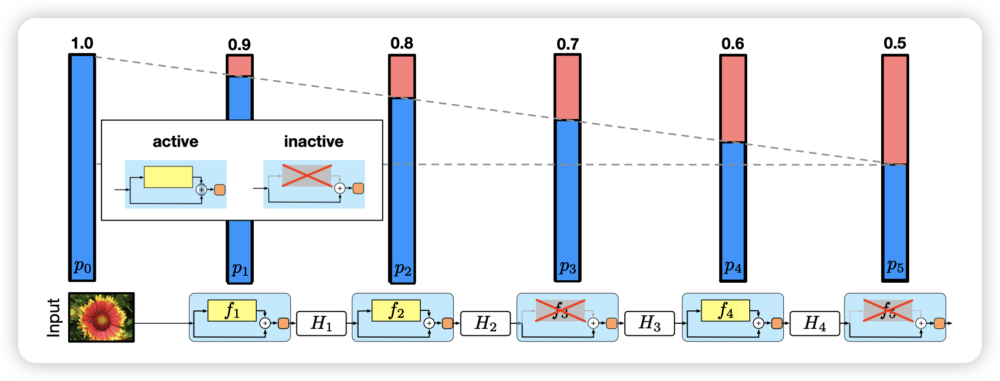
与Dropout 不同的是， Dropout 丢弃的是单个神经元的输出， 而DropPath 丢弃的是整个残差分支 / 整层 Block
| 特性 | Dropout (经典) | DropPath (Stochastic Depth) |
|---|---|---|
| 丢弃对象 | 单个神经元的输出 | 整个残差分支 / 整层 Block |
| 应用粒度 | 逐元素 (element-wise) | 层级 (layer-wise) |
| 使用场景 | 全连接层、CNN、RNN 等 | 残差网络、Transformer 等 |
| 推理阶段效果 | 不丢弃，使用缩放补偿 | 不丢弃，保留完整路径 |
| 作用 | 减少神经元过拟合 | 防止深层网络过拟合、提升稳定性 |
def drop_path(x, drop_prob: float = 0.0, training: bool = False):
if drop_prob == 0.0 or not training:
return x
keep_prob = 1 - drop_prob
shape = (x.shape[0],) + (1,) * (x.ndim - 1) # work with diff dim tensors, not just 2D ConvNets
random_tensor = keep_prob + torch.rand(shape, dtype=x.dtype, device=x.device)
random_tensor.floor_() # binarize
output = x.div(keep_prob) * random_tensor
return output
class DropPath(nn.Module):
def __init__(self, drop_prob=None):
super().__init__()
self.drop_prob = drop_prob
def forward(self, x):
return drop_path(x, self.drop_prob, self.training)
class SwinTransformerBlock(nn.Module):
def __init__(self):
...
self.drop_path = DropPath(drop_path) if drop_path > 0.0 else nn.Identity()
def forward(self, x):
shortcut = x
... # Attention
x = shortcut + self.drop_path(x)
shortcut = x
... # FFN
x = shortcut + self.drop_path(x)
...
return x 📝 TAKEAWAY DropPath（也叫 Stochastic Depth）是一种正则化方法，它在训练时随机跳过（丢弃）整个网络层或分支的计算，以减少过拟合并提高模型的泛化能力。
1.9.2 Gradient Checkpoint
在此，我们在介绍一个训练方法，用于加速训练，叫做Gradient Checkpoint又叫做Activation Checkpoint， 用PyTorh实现，是很容易的 的，我们只需要call utils.checkpoint
正常训练流程： 在前向传播（forward）时，每一层的中间激活值（activation）都会保存下来，以便反向传播（backward）时用来计算梯度。 问题是：保存所有中间激活值会消耗大量显存（GPU memory）。 • Gradient Checkpoint 的思路： 并不是保存所有激活值，而是只在部分关键节点（checkpoint）保存激活。 对于未保存的激活值，在反向传播时重新再跑一次前向计算来得到它们，从而节省显存。
换句话说：用计算换显存。
🔹 工作机制 1. 在前向传播时： • 模型被切分成若干块（segments）。 • 只保存每一块的输入，丢弃中间的激活。 2. 在反向传播时： • 需要用到梯度时，重新对那一块做一次 forward 来恢复激活。 • 然后正常计算梯度。
• 增加计算开销：因为要在 backward 时重新做一次 forward。
• 一般会带来 20%～30% 额外的训练时间。import torch
from torch import nn
from torch.utils.checkpoint import checkpoint
class MyModule(nn.Module):
def __init__(self):
super().__init__()
self.layer1 = nn.Linear(1024, 1024)
self.layer2 = nn.Linear(1024, 1024)
def forward(self, x):
def custom_forward(*inputs):
return self.layer2(self.layer1(*inputs))
# 对这部分使用 checkpoint
x = checkpoint(custom_forward, x)
return x📝 TAKEAWAY Gradient Checkpointing 是一种 用额外计算换显存 的方法，通过在前向传播时少存激活，反向传播时重算，能让大模型在有限显存下完成训练。
1.10 Swin V2
“Swin V2” (Liu et al. 2022) 是在原始 Swin Transformer 的基础上，为了更好地 扩展模型容量（更多参数）、处理高分辨率输入 以及 提高训练稳定性 所做的一系列改进。 在视觉任务中，Transformer 模型若要变得更强（更多参数、更高分辨率输入、更多层数）就会遇到几个挑战： 1. 训练不稳定：随着模型变深、通道变宽，内部激活的幅度可能急剧增长，导致梯度、数值不稳定。 2. 分辨率迁移问题：模型在低分辨率下预训练（例如 224×224）后，用在高分辨率（例如 1,536×1,536）或不同窗口尺寸时表现会下降。 3. 对标注数据的过度依赖：大模型需要大量标注数据才能训练得好。
Swin V2 就是为了克服这些障碍，支持训练超大模型（如 30 亿参数级别），同时能处理大尺寸输入 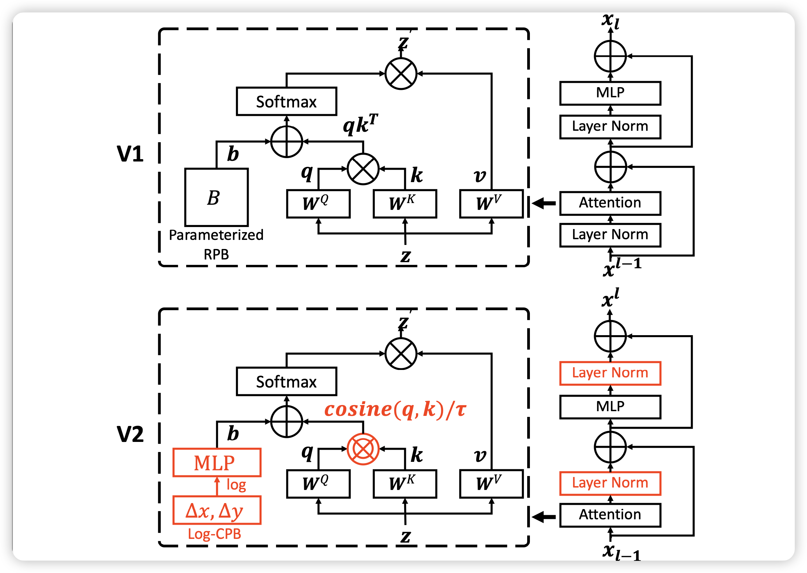
1.10.1 Post normalization
class SwinTransformerBlock(nn.Module):
def __init__(self):
...
self.drop_path = DropPath(drop_path) if drop_path > 0.0 else nn.Identity()
def forward(self, x):
shortcut = x
... # Attention
x = shortcut + self.drop_path(self.norm1(x))
shortcut = x
... # FFN
x = x + self.drop_path(self.norm2(self.mlp(x)))
...
return x 1.10.2 Scaled cosine attention
class WindowAttention:
def __init__(self,):
...
self.logit_scale = nn.Parameter(torch.log(10 * torch.ones((num_heads, 1, 1))), requires_grad=True)
...
def forward(self, x):
attn = (F.normalize(q, dim=-1) @ F.normalize(k, dim=-1).transpose(-2, -1))
logit_scale = torch.clamp(self.logit_scale, max=torch.log(torch.tensor(1. / 0.01))).exp()
attn = attn * logit_scale1.10.3 Log-spaced Continuous Position Bias(Log-CPB)
log-spaced continuous position bias approach to address the issue in transferring across window resolutions
\[ \begin{split} \widehat{\Delta x} &= \operatorname{sign}(x) \cdot \log(1 + |\Delta x|) \\ \widehat{\Delta y} &= \operatorname{sign}(y) \cdot \log(1 + |\Delta y|) \end{split} \]
2 Summary
在这篇文章中，我们学习了什么是Swin Transformer。Swin Transformer 在 ViT 的基础上引入了 层次化结构() 和 基于窗口的注意力机制。通过在固定窗口内计算注意力（W-MSA），显著降低计算复杂度；再利用 移位窗口（SW-MSA） 与 循环移位 技巧，实现跨窗口的信息交互。与此同时，Patch Merging 逐步降低分辨率、增加通道数，形成类似 CNN 的金字塔特征，适合检测与分割等多尺度任务。
此外，Swin Transformer 使用 相对位置偏置 来增强局部建模能力，并通过 DropPath 等正则化方法提升训练稳定性。在下游任务中（分类、检测、分割），Swin Transformer 表现优于传统 CNN。升级版 Swin V2 进一步提出了 残差后归一化、缩放余弦注意力 和 对数连续位置偏置 等改进，使其能够扩展到更大模型和更高分辨率输入。
除了模型外，我们还学习到了两个General的训练方法，一个是 DropPath，另一个是Gradient Checkpoint。
3 Key Concept Check Table
| Concept | Explanation |
|---|---|
| Hierarchical Representation（层级表示） | 通过 Patch Merging 逐层降低分辨率、增加通道数，形成类似 CNN 的多尺度特征图，适合检测/分割任务。 |
| Patch Merging（补丁合并） | 将 (2 ) 邻近 patch 拼接，再通过线性投影，减少空间尺寸、增加特征维度。 |
| Window-based Self-Attention (W-MSA) | 将特征图划分为固定大小的窗口（如 (7 )），仅在窗口内计算自注意力，大幅降低计算复杂度。 |
| Shifted Windows (SW-MSA) | 在下一层将窗口整体平移（如移动一半窗口大小），让跨窗口 token 得以交互，实现全局建模。 |
| Cyclic Shift（循环移位） | 实现 Shifted Window 的关键技巧：通过循环移位（cyclic shift）实现窗口偏移，保证实现高效且易于并行计算。 |
| Relative Position Bias（相对位置偏置） | 每个窗口内为不同相对位置的 token 引入可学习偏置，增强局部感知，提升泛化能力。 |
| DropPath（随机深度 / Stochastic Depth） | 在训练中随机丢弃部分残差路径，防止过拟合并增强模型泛化能力（类似于 dropout 在层级上的应用）。 |
| Gradient Checkpoint（梯度检查点） | 在训练时节省显存的技巧：通过重算中间激活值换取显存空间，从而能训练更深、更大的模型。 |
4 Q & A
Question: 为什么 ViT 的全局注意力不适合高分辨率图像？ 计算复杂度是二次方，图像尺寸越大，token 数越多，代价不可接受。
Question: 窗口之间的信息如何流通？ 通过 shifted window 机制，使得窗口划分交错，从而令原本属于不同窗口的 token 进入同一窗口，从而实现跨窗口 attention。
Q3. Swin Transformer 为什么能作为检测和分割的骨干？ 答：因为它构建了层级特征图，能和 FPN 等结构自然对接，像 ResNet 一样多尺度。
Q4. 相对位置偏置为什么比绝对位置编码更好？ 答：相对位置编码可复用在不同分辨率下的窗口，泛化性更强，更贴合图像局部关系。
Q7. Swin 的局限性有哪些？ 答：窗口大小固定，远距离依赖要堆叠多层；实现复杂度高；对超高分辨率图像仍然计算量大。
Question: shifted window 的 mask 是怎样设计的？ 当窗口移动后，一些 token 会跨越旧窗口边界，使得它们和不应交互的 token 在同一个新窗口内。此时使用 mask，把那些不合法 token 对的 attention 权重设为极小值（或禁止），以防它们交互。
Q8. Swin V2 做了哪些改进？ 答：提出 residual post-norm、更稳定的注意力缩放、对数连续位置偏置、更好的自监督训练（SimMIM）。